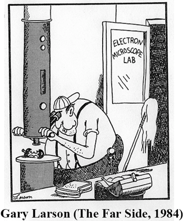
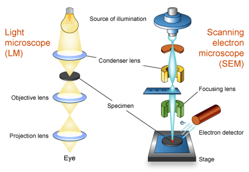
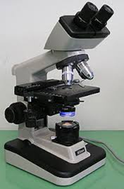
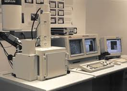
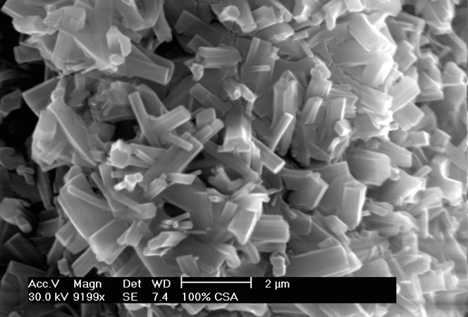
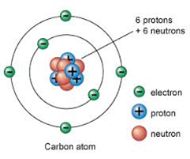

Microscope resolution increases as the wavelength of radiation used to illuminate the specimen decreases.
True
False
Microscope resolution increases as the wavelength of radiation used to illuminate the specimen decreases.
True
What is the meaning of SEM?
Secundary Electrons Magnified
Secundary Electron Magnification
Scanning Electron Microscopy
SannEr Microscopy
Scanning Electron Microscopy

What can we study in a SEM?
What can we study in a SEM?
Topography and Morphology
Chemistry
Crystallography
Orientation of grains
In-situ experiments
Reactions with atmosphere
Effects of temperature
LM versus SEM
What is the same and what is different when using LM versus SEM?
LMSEM
LM versus SEM
Fundamentally and functionally, electron microscopes are in many ways analogous to their optical counterparts (light microscopes:
LM).

SEM
LM versus SEM
Contrast between simple technology of LM and complex electronics, vacuum equipment, voltage supplies and electron optics
system of electron microscopes.

LM

SEM
What is a SEM?
A Scanning Electron Microscope (SEM) is a tool for seeing otherwise invisible worlds of microspace (1 micron ) and nanospace
(1 nanometer).
What is a SEM?
By using a focused beam of electrons, SEM reveals levels of detail and complexity inaccessible by light microscopy.
SEMs can magnify an object from about 10 times up to 300,000 times.
A scale bar is often provided on an SEM image. From this the actual size of structures in the image can be calculated.

SEM versus LM
electrons:
negatively charged particles within the atom.
cannot be focused by glass lenses (unlike visible light) but electromagnets are capable of guiding and concentrating electrons
(just as glass bends light).

SEM versus LM
SEM provides the user with an advantage over LM in 3 key areas:
Resolution at high magnification: Best resolution LM = about 400 nm a typical SEM has a resolution
of better than 10 nm (typically 5 nm).
Depth of field: (= height of a specimen that appears in focus in an image ) more than 300 times depth
of field compared to the LM => great topographical detail can be obtained.
Microanalysis: (= analysis of sample composition including information about chemical composition, as
well as crystallographic, magnetic and electrical characteristics)